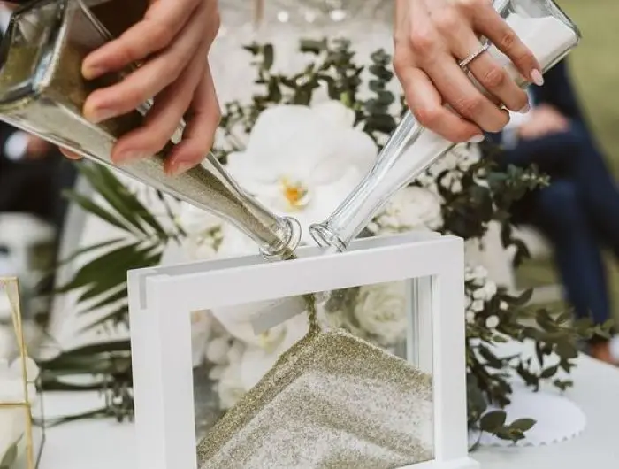
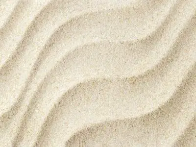
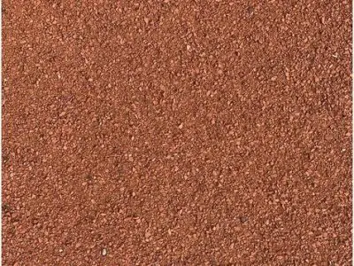
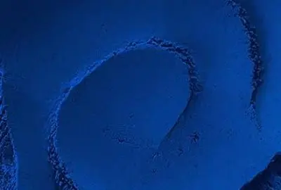
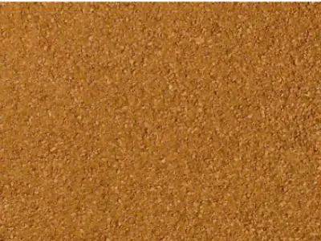
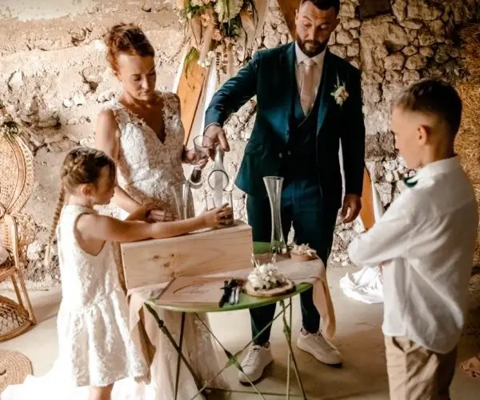
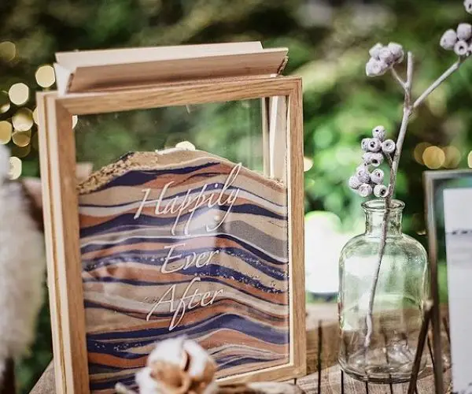

Aujourd’hui nous allons parlé de rituel de cérémonie laïque et plus précisément du rituel du sable. C’est un rituel très apprécies à travers le monde mais peu de gens en connaissent vraiment la symbolique et les origines. C’est pourquoi aujourd’hui je suis la pour éclairé votre lanterne et vous renseigner un peu plus sur ce magnifique rituel.
Qu’est ce que le rituel du sable ?
Le rituel du sable est une tradition avec beaucoup de symbolisme symbolique qui est souvent intégrée dans les cérémonies de mariage. Au cours de ce rituel, les mariés mélangent des grains de sable de différentes couleurs dans un récipient commun, généralement un vase ou une urne. Chaque couleur de sable représente un aspect unique de la vie des mariés, et le mélange des sables symbolise l’union de leurs vies et de leurs familles.
Son histoire et ses origines
Le rituel du sable trouve ses origines dans la culture hawaïenne, ce magnifique archipel ou la grande majorité des mariages sont célébrer sur les plages ( et à vrai dire on les comprend, les plages là bas sont vraiment à couper le souffle ). La coutume voudrait que les mariés prennent le sable à leurs pieds sur la plage où ils se sont unis et par la suite le versent ensemble dans un même vase pour symboliser leur union. Cependant cette tradition à légèrement évolué afin de pouvoir être adapté au cérémonie laïque car malheureusement ce n’est pas toujours possible de pouvoir se marier à la plage. De nos jours nous pouvons aussi retrouver plusieurs couleurs de sable qui définissent un trait de caractère ou simplement un être. Mais nous en reparlerons par la suite, nous allons maintenant explorer plus en détail le symbolisme de ce rituel


Le symbolisme derrière le rituel
Chaque aspect du rituel du sable est chargé de symbolisme, offrant aux couples une manière significative de célébrer leur amour et leur engagement mutuel.
Chaque grain de sable représente une facette unique de la vie des mariés. Les différentes couleurs peuvent symboliser leurs parcours individuels, leurs personnalités distinctes, leurs familles, leurs amis et leurs expériences passées. En mélangeant les grains de sable, les mariés fusionnent leurs vies pour former un tout nouveau paysage. Cela symbolise leur engagement à partager tous les aspects de leur existence, y compris les joies, les défis et les triomphes à venir.
Une fois mélangés, il est impossible de séparer les grains de sable, tout comme il est impossible de dissocier les deux partenaires. Cela souligne l’indivisibilité de leur lien et leur engagement à rester unis pour toujours.
Quelles couleurs de sable choisir pour votre rituel ?

Le Sable Blanc
Le sable blanc symbolise la pureté, l’innocence et la clarté. Il représente le début d’une nouvelle vie ensemble, dénuée de tout passé ou de tout fardeau. En mélangeant du sable blanc, vous exprimez votre engagement à démarrer une nouvelle page de votre histoire, emplie d’espoir et de promesses.

Le Sable Rouge
Le sable rouge est souvent associé à la passion, à l’amour ardent et à la romance. Il représente la flamme qui brûle entre les deux partenaires, et la profondeur de leurs sentiments. En ajoutant du sable rouge, vous affirmez votre engagement à nourrir et à entretenir cette passion tout au long de votre mariage.

Le Sable Bleu
Le sable bleu évoque la confiance, la sérénité et la stabilité. Il incarne la profondeur des océans, représentant la tranquillité et la paix que les mariés trouvent dans leur relation. En mélangeant du sable bleu, vous exprimez votre engagement à vous soutenir mutuellement, à travers les tempêtes et les calmes de votre vie.in

Le Sable Jaune
Le sable jaune est souvent associé à la joie, à l’énergie et à l’optimisme. Il illustre la lumière qui illumine la vie des mariés, apportant chaleur et bonheur à votre union. En mélangeant du sable jaune, vous exprimez votre engagement à choisir la joie et le bonheur dans votre relation, même face aux défis et aux difficultés.

Le Sable Violet
Le sable violet est souvent associé à la spiritualité, à la créativité. Il représente la profondeur des émotions et des aspirations des mariés, ainsi que votre engagement à se soutenir mutuellement dans votre croissance personnelle. En ajoutant du sable violet, vous exprimez votre désir de partager vos inspiration et votre cheminement spirituel.

Le Sable Vert
Le sable vert est souvent associé à la croissance, à la fertilité et au renouveau. Il représente l’évolution et le développement de votre relation de mariés, ainsi que votre engagement à cultiver votre amour et à vous épanouir ensemble. En ajoutant du sable vert, vous exprimez le désir de voir votre amour grandir et prospérer au fil du temps.
Un rituel à 2 ou plus …
Le rituel à deux
Dans un rituel à deux, seuls les mariés participent en ajoutant leurs grains de sable au récipient commun.
Cela crée un moment intime et personnel entre les époux, symbolisant leur engagement mutuel et leur union en tant que couple. Un rituel à deux met l’accent sur la relation centrale entre les mariés et renforce leur engagement l’un envers l’autre.
Au cours de la cérémonie, vous prendrez donc chacun un récipient de sable et vous verserez ensemble (ou chacun votre tour, petit à petit) leur contenu dans le vase commun. Les deux sables se mélangeront alors de manière indissoluble, tout en conservant chacun leur couleur.

Le rituel avec vos enfants
Le rituel avec vos enfants symbolise la création de votre famille, sa solidité et son unité. Et illustre également que vous, parents, serez toujours là pour vos enfants, du début (le sable de dessous) à la fin (le sable du dessus).En plus des mariés, chaque enfant aura alors un sable de couleur différente.
Pour cette version les mariés commencent par verser une partie de leurs sables, puis chacun des enfants ajoute le sien et les mariés terminent en déposant la fin des leurs.
Le rituel avec parents et grands parents
Le rituel avec vos parent et grand parents permet de montrer l’union de vos 2 familles ainsi le rôle particulier que chaque génération de votre famille a pu avoir dans vos vies !
Chaque personne de la famille aura un sable de couleur différente et le versera en commençant de la plus ancienne génération à la plus jeune.


Le rituel avec vos proches
Vous pouvez aussi faire le choix de faire participer les témoins, les frères et sœurs et/ou les amis les plus proches. De cette façon vous montrez à tous vos proches l’impacte qu’ils ont eu sur votre vie et ce qu’ils représentés pour vous.
Si trouvez une couleurs pour chacune des personnes participantes devient compliqué vous pouvez attribué une couleurs pas groupe, une pour les frères et soeurs, une pour les cousins, une pour les amis proche, etc.
Quand intégrer le rituel à votre cérémonie ?
Le rituel du sable peut notamment être réalisé à la suite de votre échange de vœux et d’alliances. Cela vous permet de sceller votre engagement mutuel en ajoutant vos grains de sable au récipient commun, symbolisant ainsi l’union de vos vies. C’est pour moi le moment idéal pour le prévoir mais vous pouvez bien entendu le faire à n’importe quel moment de votre cérémonie tout dépend de vos préférences et du déroulement globale de la cérémonie. Quelle que soit le moment choisie, l’important est que le rituel soit intégré de manière significative et réfléchie, ajoutant une touche spéciale à votre journée de mariage.
Si l’organisation de cette cérémonie est emmener à être stressant pour vous car vous voulez être sur que tout soit parfait n’hésitez pas à faire appel à mes services entant que coordinatrice jour J.
Pour conclure, le rituel du sable vous offres une manière belle et significative de célébrer votre amour et votre engagement lors de votre mariage. En mélangeant des grains de sable de différentes couleurs, ils symbolisent l’union de leurs vies et la création d’un nouveau paysage ensemble. Que vous choisissiez d’incorporer cette tradition dans votre cérémonie ou non, sa symbolique puissante perdure, rappelant l’importance de l’amour et de l’unité dans le voyage du mariage.
Petit Bonus
Si vous n’avez pas d’officiante pour votre mariage voici un discours type qui pourras être lu par témoins, famille ou amis pour votre rituel :
Chers amis, famille et êtres chers,
Aujourd’hui, nous sommes réunis pour célébrer un moment unique et sacré : l’union de deux âmes qui s’engagent à parcourir ensemble le chemin de la vie. Alors que [Nom du marié] et [Nom de la mariée] s’apprêtent à échanger leurs vœux et à sceller leur amour, nous sommes témoins d’un acte profondément symbolique : le rituel du sable.
Ce rituel empreint de tradition et de signification, nous rappelle la beauté et la force de l’amour partagé. À travers ce geste simple mais puissant, [Nom du marié] et [Nom de la mariée] vont mélanger des grains de sable de différentes couleurs, symbolisant l’union de leurs vies et la création d’un nouveau paysage ensemble.
Chaque grain de sable représente une histoire unique, un voyage personnel, une expérience précieuse. Les différentes couleurs évoquent les nuances de leurs personnalités, les richesses de leurs familles et les moments partagés qui ont façonné leur amour. Et aujourd’hui, en ce jour de leur mariage, ces grains de sable se fondent en un seul, unissant [Nom du marié] et [Nom de la mariée] dans une promesse d’amour éternel.
Comme le sable qui ne peut être séparé une fois mélangé, ainsi en est-il de votre amour. Que ce geste symbolique rappelle toujours à votre cœur que vous êtes indivisibles, que vous êtes unis dans vos joies et vos peines, dans vos rêves et vos accomplissements. Puissent ces grains de sable, scellés à jamais dans ce récipient, être le symbole tangible de votre engagement éternel l’un envers l’autre.
En tant que famille et amis, nous ajoutons nos propres grains de sable à ce mélange, témoignant de notre soutien et de notre amour indéfectible pour vous deux. Que notre présence aujourd’hui soit le témoignage de notre engagement à vous soutenir, à vous encourager et à vous aimer tout au long de votre vie ensemble.
[Nom du marié] et [Nom de la mariée], alors que vous vous apprêtez à échanger vos vœux et à vous engager l’un envers l’autre, que le rituel du sable reste gravé dans vos cœurs comme un symbole de votre amour profond et de votre union sacrée. Que chaque grain de sable soit le témoin silencieux de votre amour éternel, de votre force inébranlable et de votre bonheur infini.
Avec tout notre amour et notre admiration,
[Nom de la personne qui prononce le discours] »